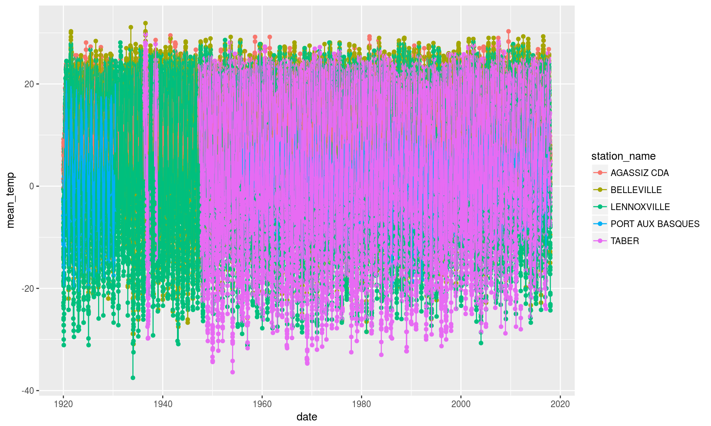

Using with the tidyverse
Sam Albers
2017-06-09
Source material
This vignette is adapted very heavily from Hadley Wickham’s incredible R for Data Science book. You should support Hadley and the work he does by buying it.
Packages
In addition to weathercan, you’ll need several packages from the tidyverse to complete the following analysis.
library(weathercan)
library(tibble)
library(dplyr)
library(tidyr)
library(ggplot2)
library(broom)
library(modelr)
library(purrr)Using weathercan to load in data
Your first decision that you need to make when analyzing data from weather stations across canada is to determine for which stations you’d like to query from Environment and Climate Change Canada. In this example, to keep processing time low, we will query two stations with very long records that happen to be far apart. To make that choice we can use (tidyverse)[http://tidyverse.org/] tools and the included stations data frame in this package:
stations %>%
filter(station_id %in% c(707, 4859, 6693,5397, 2315),
interval == "day") %>%
select(prov, station_name, station_id, start, end)## # A tibble: 5 x 5
## prov station_name station_id start end
## <fctr> <chr> <fctr> <int> <int>
## 1 BC AGASSIZ CDA 707 1889 2017
## 2 AB TABER 2315 1907 2017
## 3 ON BELLEVILLE 4859 1866 2017
## 4 QC LENNOXVILLE 5397 1888 2017
## 5 NL PORT AUX BASQUES 6693 1909 2017These two weather stations will be our test data for this vignette. You can broaden or expand your analysis by choosing different or more station. Our next step is to use the weather() function to load in the data.
The following will take quite some time to download as it is downloading over 100 years of daily data for 5 stations.
pancan_df <- weather(station_ids = c(707, 4859, 6693,5397, 2315),
interval = "day") %>%
filter(year >= 1920) %>%
select(station_name, station_id, prov, lat, lon, elev, climat_id, WMO_id, TC_id, mean_temp, date)Plot the data
ggplot(pancan_df, aes(x = date, y = mean_temp, colour = station_name)) +
geom_point() +
geom_line()## Warning: Removed 25074 rows containing missing values (geom_point).## Warning: Removed 6325 rows containing missing values (geom_path).
This is quite a large dataset.
Creating list-columns
pancan_df_nest <- pancan_df %>%
group_by(station_name, station_id, prov, lat, lon, elev, climat_id, WMO_id, TC_id) %>%
nest()
pancan_df_nest## # A tibble: 5 x 10
## station_name station_id prov lat lon elev climat_id WMO_id
## <chr> <dbl> <fctr> <dbl> <dbl> <dbl> <chr> <chr>
## 1 AGASSIZ CDA 707 BC 49.24 -121.76 15.0 1100120
## 2 BELLEVILLE 4859 ON 44.15 -77.39 76.2 6150689
## 3 PORT AUX BASQUES 6693 NL 47.57 -59.15 39.7 8402975 71197
## 4 LENNOXVILLE 5397 QC 45.37 -71.82 181.0 7024280 71611
## 5 TABER 2315 AB 49.79 -112.12 811.0 3036360
## # ... with 2 more variables: TC_id <chr>, data <list>Fit some models
Define the model
clim_model <- function(df) {
lm(mean_temp ~ date, data = df)
}Run the model with the existing data
pancan_df_nest <- pancan_df_nest %>%
mutate(model = map(data, clim_model))
pancan_df_nest## # A tibble: 5 x 11
## station_name station_id prov lat lon elev climat_id WMO_id
## <chr> <dbl> <fctr> <dbl> <dbl> <dbl> <chr> <chr>
## 1 AGASSIZ CDA 707 BC 49.24 -121.76 15.0 1100120
## 2 BELLEVILLE 4859 ON 44.15 -77.39 76.2 6150689
## 3 PORT AUX BASQUES 6693 NL 47.57 -59.15 39.7 8402975 71197
## 4 LENNOXVILLE 5397 QC 45.37 -71.82 181.0 7024280 71611
## 5 TABER 2315 AB 49.79 -112.12 811.0 3036360
## # ... with 3 more variables: TC_id <chr>, data <list>, model <list>Then add the residuals to the model
pancan_df_nest <- pancan_df_nest %>%
mutate(model = map(data, clim_model),
resids = map2(data, model, add_residuals))
pancan_df_nest## # A tibble: 5 x 12
## station_name station_id prov lat lon elev climat_id WMO_id
## <chr> <dbl> <fctr> <dbl> <dbl> <dbl> <chr> <chr>
## 1 AGASSIZ CDA 707 BC 49.24 -121.76 15.0 1100120
## 2 BELLEVILLE 4859 ON 44.15 -77.39 76.2 6150689
## 3 PORT AUX BASQUES 6693 NL 47.57 -59.15 39.7 8402975 71197
## 4 LENNOXVILLE 5397 QC 45.37 -71.82 181.0 7024280 71611
## 5 TABER 2315 AB 49.79 -112.12 811.0 3036360
## # ... with 4 more variables: TC_id <chr>, data <list>, model <list>,
## # resids <list>Working with list-columns
We can unnest the results then plot them
unnest()
resids <- unnest(pancan_df_nest, resids)
resids## # A tibble: 177,945 x 12
## station_name station_id prov lat lon elev climat_id WMO_id
## <chr> <dbl> <fctr> <dbl> <dbl> <dbl> <chr> <chr>
## 1 AGASSIZ CDA 707 BC 49.24 -121.76 15 1100120
## 2 AGASSIZ CDA 707 BC 49.24 -121.76 15 1100120
## 3 AGASSIZ CDA 707 BC 49.24 -121.76 15 1100120
## 4 AGASSIZ CDA 707 BC 49.24 -121.76 15 1100120
## 5 AGASSIZ CDA 707 BC 49.24 -121.76 15 1100120
## 6 AGASSIZ CDA 707 BC 49.24 -121.76 15 1100120
## 7 AGASSIZ CDA 707 BC 49.24 -121.76 15 1100120
## 8 AGASSIZ CDA 707 BC 49.24 -121.76 15 1100120
## 9 AGASSIZ CDA 707 BC 49.24 -121.76 15 1100120
## 10 AGASSIZ CDA 707 BC 49.24 -121.76 15 1100120
## # ... with 177,935 more rows, and 4 more variables: TC_id <chr>,
## # mean_temp <dbl>, date <date>, resid <dbl>ggplot(data = resids, aes(date, resid)) +
geom_line(aes(group = station_name), alpha = 1 / 3) +
geom_point() +
geom_hline(yintercept = 0) +
facet_wrap(~ station_name, ncol = 1)## Warning: Removed 6325 rows containing missing values (geom_path).## Warning: Removed 25074 rows containing missing values (geom_point).
Using broom
glance_df <- pancan_df_nest %>%
mutate(glance = map(model, broom::glance)) %>%
unnest(glance, .drop = TRUE) %>%
select(station_name, prov, r.squared, p.value, AIC)| station_name | prov | r.squared | p.value | AIC |
|---|---|---|---|---|
| AGASSIZ CDA | BC | 0.0022561 | 0.0000000 | 231433.5 |
| BELLEVILLE | ON | 0.0022103 | 0.0000000 | 259457.1 |
| PORT AUX BASQUES | NL | 0.0033303 | 0.0000000 | 177849.2 |
| LENNOXVILLE | QC | 0.0009461 | 0.0000000 | 272731.9 |
| TABER | AB | 0.0003139 | 0.0071463 | 178252.6 |
Looking at the predictions
preds <- pancan_df_nest %>%
mutate(model = map(data, clim_model),
preds = map2(data, model, add_predictions)) %>%
unnest(preds)
preds## # A tibble: 177,945 x 12
## station_name station_id prov lat lon elev climat_id WMO_id
## <chr> <dbl> <fctr> <dbl> <dbl> <dbl> <chr> <chr>
## 1 AGASSIZ CDA 707 BC 49.24 -121.76 15 1100120
## 2 AGASSIZ CDA 707 BC 49.24 -121.76 15 1100120
## 3 AGASSIZ CDA 707 BC 49.24 -121.76 15 1100120
## 4 AGASSIZ CDA 707 BC 49.24 -121.76 15 1100120
## 5 AGASSIZ CDA 707 BC 49.24 -121.76 15 1100120
## 6 AGASSIZ CDA 707 BC 49.24 -121.76 15 1100120
## 7 AGASSIZ CDA 707 BC 49.24 -121.76 15 1100120
## 8 AGASSIZ CDA 707 BC 49.24 -121.76 15 1100120
## 9 AGASSIZ CDA 707 BC 49.24 -121.76 15 1100120
## 10 AGASSIZ CDA 707 BC 49.24 -121.76 15 1100120
## # ... with 177,935 more rows, and 4 more variables: TC_id <chr>,
## # mean_temp <dbl>, date <date>, pred <dbl>ggplot(data = preds, aes(x = date, y = mean_temp, colour = station_name)) +
geom_point() +
geom_line(aes(y = pred)) +
facet_wrap(~ station_name, scales = "free_y", ncol = 1)## Warning: Removed 25074 rows containing missing values (geom_point).